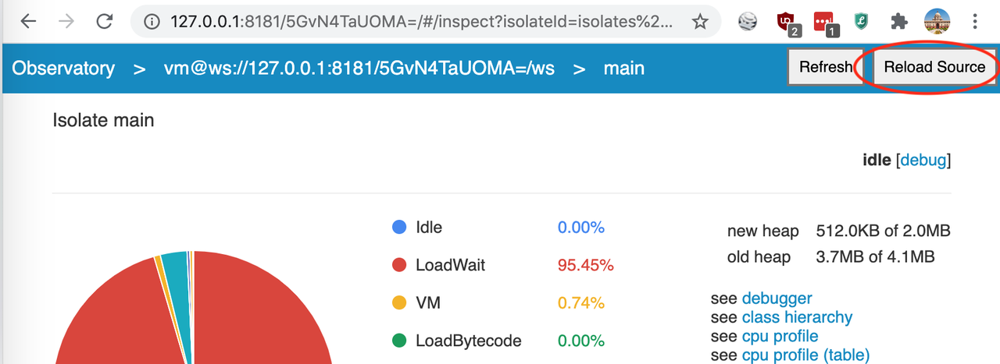

How Dart, Flutter Stateful Hot Reload Work? - Part 1
This will be a series of articles on exploring the internals of Dart & Flutter stateful hot reload. In the first article, lets write a simple dart program to see stateful hot reload in action. Then lets delve into details on what is happening.
Stateful Hot Reload
import 'dart:async'; int total = 0; void adder(_) { int delta = 2; total += delta; print("Total is $total. Adding $delta"); } void main() { Timer.periodic(Duration(seconds: 2), adder); }
In the above program1, we are using a Timer.periodic2 to create a timer which calls adder function every 2 seconds.
We can run this program from command line using
$ dart --observe hot_reload.dart Observatory listening on http://127.0.0.1:8181/d42KmW4LknU=/ Total is 2. Adding 2 Total is 4. Adding 2 Total is 6. Adding 2 Total is 8. Adding 2 ...
This will start executing the program and will provide a link to observatory3, a tool to profile/debug Dart applications.
As the program is executing, lets open the program in an editor, change delta from 2 to 3.
# change this # int delta = 2; # change to int delta = 3;
If we restart the program, it will start executing from the beginning and it will lose the state of the program.
$ dart --observe hot_reload.dart Observatory listening on http://127.0.0.1:8181/eoP2lpC2ZWw=/ Total is 3. Adding 3 Total is 6. Adding 3 Total is 9. Adding 3
Instead of restart, we can open the observatory link in browser, open main isolate and click on Reload Source button.

As we can see from the below output, it did a stateful hot reload and state of the program is preserved instead of starting from the beginning.
$ dart --observe hot_reload.dart Observatory listening on http://127.0.0.1:8181/n_GSAKsyr5s=/ Total is 2. Adding 2 Total is 4. Adding 2 Total is 6. Adding 2 Total is 8. Adding 2 Total is 11. Adding 3 # after hot reload Total is 14. Adding 3 Total is 17. Adding 3 Total is 20. Adding 3
During a hot reload, Dart VM will apply changes to a live program4. If the source code of a method is changed, VM will replace the methods with the new updated methods. Next time, when the program looks up for a particular method, it will find the updated method and use it.
Conclusion
In this article, we have seen how hot reload works by writing a simple program in Dart. In the upcoming articles, lets dive into the Dart VM internals, Flutter architecture and other nitty gritties of hot reload.

Chillar Anand
A blog about python, careers & life.
To contact me, send a message here.